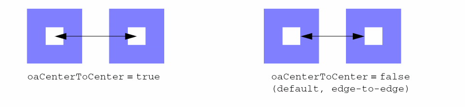
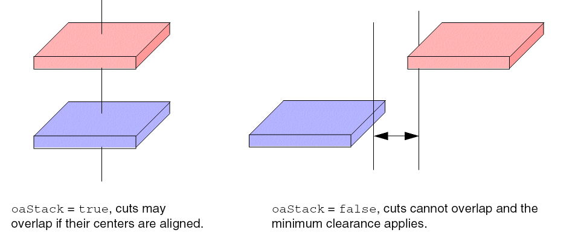
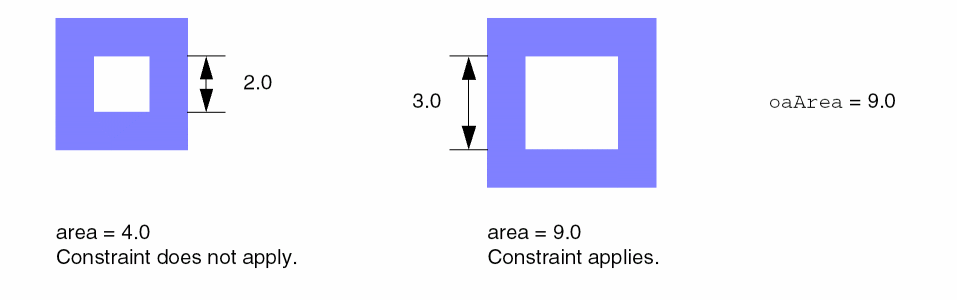

oaMinViaClearance
Sets the minimum spacing, either edge-to-edge or center-to-center, between via cuts on the specified layers, either absolutely or conditionally, based upon the net the cuts are on, how a via stack is constructed, or the area of the cuts.
oaMinViaClearance Quick Reference
Parameters
-
oaCenterToCenter(BoolValue, optional) determines how cut clearance is measured. If set totrue, cut clearance is measured from the center of one cut to the center of the other cut. If not specified or set tofalse, cut clearance is measured edge-to-edge.
 -
oaConnectivityType(StringAsIntValue, optional) specifies the shapes to which this constraint applies, based on their connectivity, as given in Table .String Integer Value Constraint applies to: Via cuts overlapped by a single metal shape from above and by another single metal shape from below
-
oaStack(BoolValue, optional) controls whether via cuts on two different layers can be stacked (true) if the cuts are aligned. Iffalseor not specified, via cuts cannot be stacked.
 -
oaArea(Value) specifies that the constraint applies only if the area of a cut is equal to or greater than this value. The value of this parameter is assumed to be greater than the default clearance value. This parameter is currently not supported by Space-based Router and Chip Optimizer.
 -
exceptConnectivityType(IntValue, optional) specifies that the constraint does not apply to via cuts with certain connectivity types, as given in the following table.
Table -1 exceptConnectivityType Parameter Values
| Integer Value | Equivalent to: | Constraint does not apply to: |
|---|---|---|
-
enclosingLayer(LayerValue, optional) specifies the enclosing layer forviaEdgeTypeParamextension checks. -
viaEdgeTypeParam(IntValue, optional) specifies that the constraint applies only to the via cut edges of this type on the first cut layer (the type is defined in theviaEdgeTypeconstraint). -
sizeBy(IntValue, optional) specifies that the constraint is applied after sizing all the edges of the via cut on the first cut layer by this value. If bothenclosingLayerandsizeByare specified, the spacing is measured between the geometric AND (or intersection) of the enclosing layer extension and the via extended bysizeBy. In other words, the spacing is measured from the enclosing metal edge or the expanded via cut edge, whichever is at a shorter distance from the via cut. -
extendBy(IntValue, optional) specifies that an extension equal to this value is applied to the via cut edges that satisfyviaEdgeTypeParambefore the constraint is applied. IfsizeByis also specified, the extension is applied after sizing the cuts. -
cutClass(DualValue, optional) specifies the cut class to which the constraint applies on the first cut layer. -
otherCutClass(DualValue, optional) specifies the cut class to which the constraint applies on the second cut layer. -
overlapNotAllowed(BoolValue, optional) specifies whether to show violations for overlapped or stacked vias when the minimum spacing between via cuts on the specified layers is0. If set totrue, a violation is reported for overlapped or stacked vias. By default, the parameter value isfalse.
However, there is an exception to this parameter. If theoaStackparameter is specified and the centers of the overlapped vias are aligned, then no violation is reported.
Value Types
oaMinViaClearance constraints have the following value types:
-
Value
Specifies the minimum spacing, in user units. -
OneDTblValue
Specifies the minimum spacing that changes according to the width of the wider of the two shapes. The width of the wider shape is the lookup key for the table. The table value is the minimum spacing. The width of a shape is defined as the smaller of the shape’s two dimensions.
Examples
- Example 1: oaMinViaClearance with oaStack and oaConnectivityType
- Example 2: oaMinViaClearance with enclosingLayer, viaEdgeTypeParam
- Example 3: oaMinViaClearance with enclosingLayer, viaEdgeTypeParam, sizeBy, extendBy, cutClass, and otherCutClass
Example 1: oaMinViaClearance with oaStack and oaConnectivityType
set_layerpair_constraint -constraint oaMinViaClearance \
-layer1 via1 -layer2 via2 -Value 0.5
set_constraint_parameter -name oaConnectivityType \
-StringAsIntValue sameNetConnectivity
set_constraint_parameter -name oaStack -BoolValue true
set_layerpair_constraint -constraint oaMinViaClearance \
-layer1 cont1 -layer2 cont2 -Value 0.3
Sets the minimum via cut clearance on via1 and via2 to 0.5. It also sets the minimum via cut clearance on cont1 and cont2 to 0.3 when the cuts are on the same net and stacked vias are aligned.
Example 2: oaMinViaClearance with enclosingLayer, viaEdgeTypeParam
set_constraint_parameter -name anyOppositeExtension -Value 0.009
set_constraint_parameter -name negateAnyOppositeExtension -BoolValue true
set_layer_constraint -layer Via1 -constraint viaEdgeType -IntValue 1
set_constraint_parameter -name viaEdgeTypeParam -IntValue 1 set_constraint_parameter -name enclosingLayer -LayerValue Metal1 set_constraint_parameter -name oaCenterToCenter -BoolValue true set_layerpair_constraint -layer1 Via1 -layer2 Via2 \ -constraint oaMinViaClearance -Value 0.06
check_layerpair_space -lpp1 { Via1 } -lpp2 { Via2 } -diff_net true -same_net true
Sets the center-to-center spacing between a Via1 via cut with viaEdgeType 1 (the constraint applies only to via cuts that do not have two opposite edges with extensions less than or equal to 0.009), enclosed by Metal1, and a Via2 cut to at least 0.06.
Example 3: oaMinViaClearance with enclosingLayer, viaEdgeTypeParam, sizeBy, extendBy, cutClass, and otherCutClass
set_constraint_parameter -name anyOppositeExtension -Value 0.009
set_constraint_parameter -name edgeExtension -Value 0.009
set_layer_constraint -layer Via1 -constraint viaEdgeType -IntValue 2
set_constraint_parameter -name cutClass -DualValue {0.032 0.032} set_constraint_parameter -name viaEdgeTypeParam -IntValue 2 set_constraint_parameter -name enclosingLayer -LayerValue Metal1 set_constraint_parameter -name extendBy -Value 0.008 set_constraint_parameter -name sizeBy -Value 0.009 set_layerpair_constraint -layer1 Via1 -layer2 Via2 \ -constraint oaMinViaClearance -Value 0.07
check_layerpair_space -lpp1 { Via1 } -lpp2 { Via2 } -diff_net true -same_net true
Specifies that the edge-to-edge spacing between a Via1 via cut edge with viaEdgeType 2 and a Via2 via cut must be at least 0.07 when the Via1 via cut, enclosed by Metal1, is sized by 0.009 and extended by 0.008. The constraint applies only to Via1 via cuts with opposite edge extensions less than or equal to 0.009 (any edges on those via cuts with extension less than or equal to 0.009 are of viaEdgeType 2).
Related Topics
Return to top